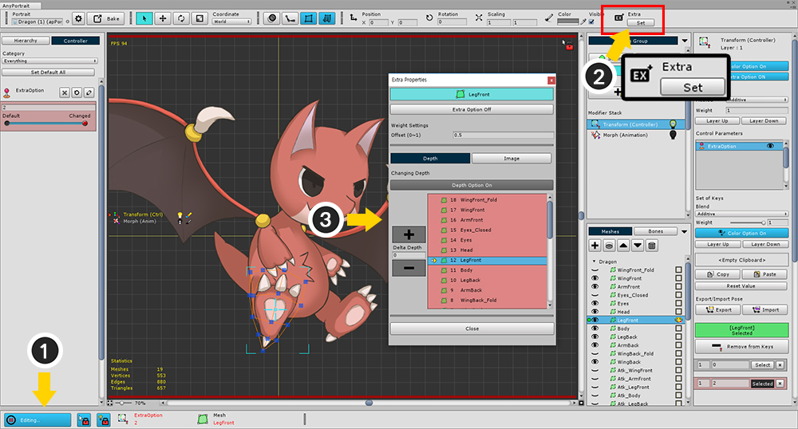
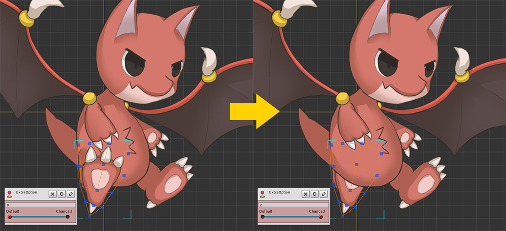
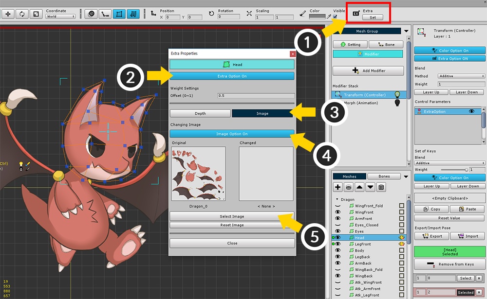
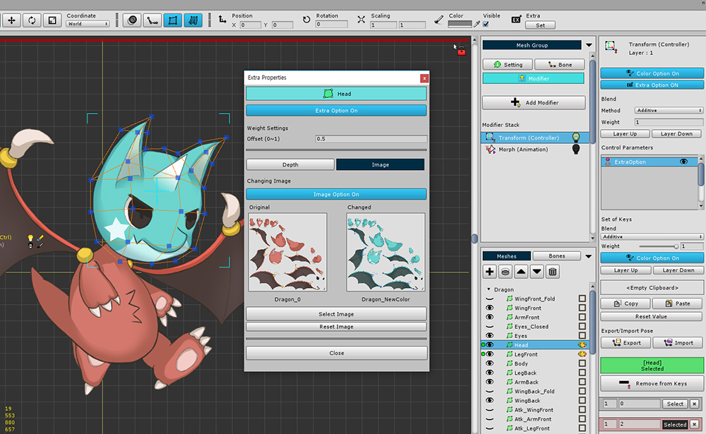
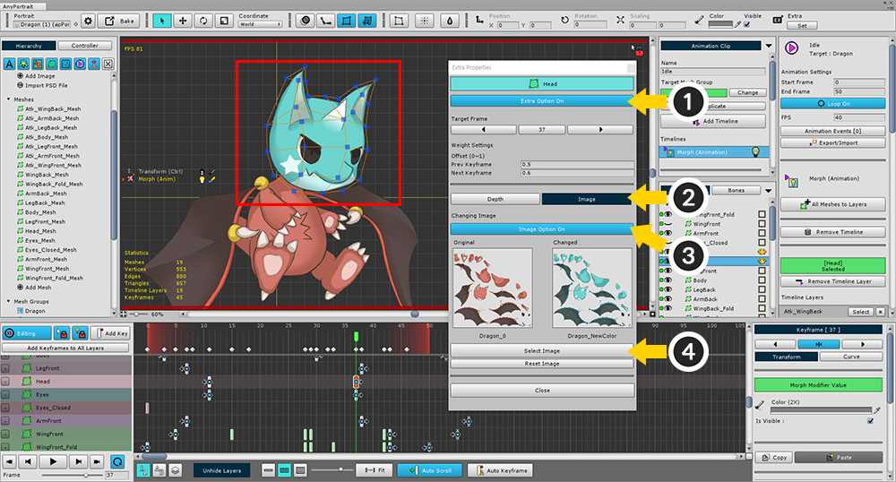
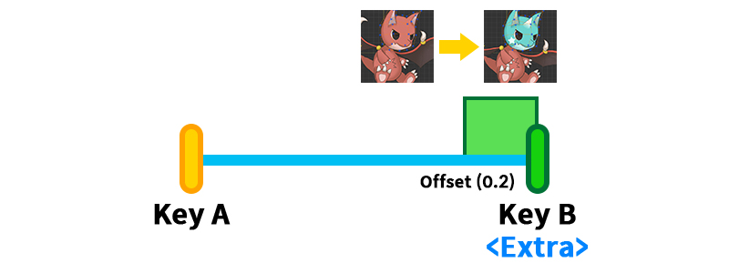
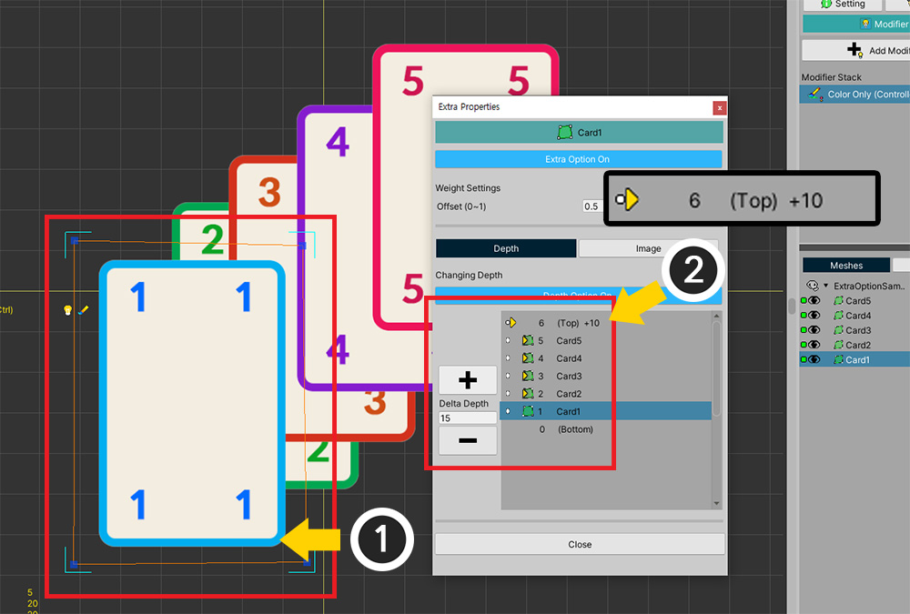

AnyPortrait > 메뉴얼 > 렌더링 순서와 이미지 전환하기
렌더링 순서와 이미지 전환하기
1.3.4
애니메이션이 재생되거나 게임이 실행되는 도중에 메시의 렌더링 순서를 전환해야하는 경우가 있습니다.
또는, 이미지를 스크립트 없이 전환해야하는 경우도 있습니다.
이 기능들의 특징은 다른 모디파이어와 달리 "연속성이 없다"라는 것입니다.
그래서 이 2개의 기능은 다른 모디파이어와 다른 방식으로 설정을 해야합니다.
AnyPortrait에서는 이것을 "Extra 설정"이라고 부릅니다.
컨트롤 파라미터로 렌더링 순서 제어하기

(1) 컨트롤 파라미터를 추가합니다. 여기서는 "ExtraOption"이라고 이름을 지정했습니다.
(2) 메시 그룹을 선택합니다.
(3) Modifier 탭을 선택하고 Add Modifier 버튼을 누릅니다.
(4) "Morph (Controller)" 모디파이어나 "Transform (Controller)" 모디파이어를 선택하여 추가합니다.
렌더링 순서와 이미지를 교체할 수 있는 모디파이어는 다음의 6 종류 입니다.
- Transform (Controller)
- Transform (Animation)
- Morph (Controller)
- Morph (Animation)
- Color Only (Controller)
- Color Only (Animation)
자식 메시 그룹을 대상으로 렌더링 순서를 바꾸는 것도 가능합니다.
하지만 Morph 모디파이어는 오직 메시에만 적용되므로, 이 경우엔 Transform 모디파이어나 Color Only 모디파이어를 이용하실 것을 권장합니다.

(1) 렌더링 순서를 바꾸고자하는 메시를 선택합니다.
(2) 컨트롤 파라미터의 키 생성 버튼을 눌러서, 모디파이어에 메시와 컨트롤 파라미터를 등록합니다.

(1) 컨트롤 파라미터의 슬라이더를 움직이고, (2) 두번째 키를 생성합니다.

(1) 모디파이어 설정 화면에서 Extra Option 버튼을 눌러서 Extra 설정을 활성화합니다.

(1) 편집 모드를 켭니다. (단축키 : A )
(2) 화면 상단에서 Extra 설정의 Set 버튼을 눌러서 Extra 속성 다이얼로그를 엽니다.

Extra 설정을 활성화하기 위해서는 총 3단계의 옵션 활성화 단계를 거쳐야 합니다.
- 1단계 : 모디파이어의 Extra 옵션 활성화
- 2단계 : 선택된 메시에 대한 컨트롤 파라미터의 키 또는 키프레임에서의 Extra 옵션 활성화
- 3단계 : 렌더링 순서(Depth) 변경 또는 이미지 변경에 대한 활성화
위에서 1단계는 활성화되었으므로, 다음의 2, 3단계를 수행해야합니다.
(1) Extra Option Off 버튼을 눌러서 Extra Option On 상태로 전환합니다. (2단계)
(2) Depth Option Off 버튼을 눌러서 Depth Option On 상태로 전환합니다. (3단계)

(1) "+" 버튼이나 "-" 버튼을 눌러서 렌더링 순서에 해당하는 Depth를 변경할 수 있습니다.
또는 Delta Depth의 값을 변경하여 렌더링 순서를 변경할 수 있습니다.
(2) 여기서는 Depth 값을 -2 만큼 이동하여 다리가 몸 뒤로 이동하여 렌더링됩니다.
리스트에서는 모든 메시나 메시 그룹이 나타나지 않고, 렌더링 순서를 바꿀 수 있는 대상만 나타납니다.
메시 뿐만 아니라 하위 메시 그룹도 렌더링 순서를 바꿀 수 있습니다.
단, 클리핑되는 메시들은 이동이 불가능합니다.
Extra Properties 다이얼로그 중 기본 화면 구성은 다음과 같습니다.
1. Extra Option 버튼 : 현재 키에 대한 Extra 설정을 켜거나 끕니다.
2. Offset : Extra 설정이 적용되는 범위를 설정합니다. 값이 1에 가까울 수록 넓은 범위에서 Extra 설정이 적용됩니다.
3. Depth, Image 탭 : 렌더링 순서를 전환할 지, 이미지를 교체할지에 대해서 각각 설정할 수 있습니다. 동시에 지정하는 것도 가능합니다.
4. Depth Option 버튼 : Depth 탭이 켜진 경우, 렌더링 순서 전환(Depth Option)을 켜거나 끕니다.
5. Depth 변경 버튼과 입력 상자 : 렌더링 순서를 변경할 수 있습니다.
6. 렌더링 순서 변경 대상 리스트 : 렌더링 순서를 바꿀수 있는 메시, 메시 그룹들의 리스트와 함께 현재의 Depth를 화살표로 확인할 수 있습니다.
7. Close 버튼 : 다이얼로그를 닫습니다.


이제 컨트롤 파라미터의 슬라이더를 움직이면 다리의 렌더링 순서가 바뀌는 것을 확인하실 수 있습니다.
컨트롤 파라미터로 이미지 전환하기

테스트를 위해서 새로운 이미지를 추가합니다.
기본적인 Atlas의 구조가 비슷해야합니다.

이번에는 머리의 이미지를 바꾸어봅시다.
(1) 머리(Head) 메시를 선택합니다.
(2) Add to Keys 버튼을 눌러서 이 모디파이어와 컨트롤 파라미터에 메시를 추가합니다.

메시를 선택하고 편집 모드를 켠 상태에서 다음의 과정을 수행합니다.
(1) 화면 상단의 Extra의 Set 버튼을 누릅니다.
(2) Extra Option 버튼을 눌러서 On 상태로 바꿉니다.
(3) Image 탭을 선택합니다.
(4) Image Option 버튼을 눌러서 On 상태로 바꿉니다.
(5) Select Image 버튼을 누릅니다.

변경하고자 하는 이미지를 선택하고 Select 버튼을 누릅니다.

이미지가 선택되면 "Changed" 슬롯에 이미지가 등록되며, 실제로도 머리 메시의 이미지가 변경된 것을 볼 수 있습니다.
Extra Properties 다이얼로그 중 이미지 교체에 대한 화면 구성은 다음과 같습니다.
1. Image Option 버튼 : Image 탭이 켜진 경우, 이미지를 전환하는 설정을 켜거나 끕니다.
2. Original / Changed Slot : 변경 전, 후의 이미지가 나타납니다.
3. Select Image 버튼 : 어떤 이미지로 전환될 지 선택할 수 있습니다.
4. Reset Image 버튼 : 선택된 이미지를 해제합니다.


컨트롤 파라미터의 슬라이더를 움직이면 머리 메시의 이미지가 변경됩니다.
애니메이션에 Extra 설정 적용하기

Morph (Animation)이나 Transform (Animation) 모디파이어를 이용하면, 애니메이션에서도 Extra 설정을 적용하여 렌더링 순서를 바꾸거나 이미지를 바꾸는 것이 가능합니다.
애니메이션을 만들기 전에, 모디파이어 설정에서 Extra Option을 켭니다.

또는 애니메이션 작업 화면에서 (1) 타임라인 레이어을 선택하고 (2) Extra Option 버튼을 눌러서 활성화할 수 있습니다.

애니메이션 편집 모드를 켠 상태에서, (1) 키프레임을 선택합니다.
(2) Extra 설정의 Set 버튼을 누릅니다.
(편집 모드가 켜져 있지 않다면 Set 버튼을 누를 수 없습니다.)

나머지 과정은 컨트롤 파라미터를 이용한 설정 방법과 동일합니다.
여기서는 예시로 이미지를 바꾸는 과정을 복습해봅시다.
(1) Extra Option 버튼을 눌러서 On 상태로 만듭니다.
(2) Image 탭을 선택합니다.
(3) Image Option 버튼을 눌러서 On 상태로 만듭니다.
(4) Select Image 버튼을 눌러서 전환될 이미지를 선택합니다.
이제 애니메이션이 재생되면 이미지가 실시간으로 바뀌는 것을 볼 수 있습니다.
애니메이션에서의 Extra Properties 다이얼로그의 화면 구성은 조금 다릅니다.
1. Target Frame
: 현재 선택된 키프레임의 위치가 버튼으로 표시됩니다.
좌, 우 버튼을 누르면 이전, 다음 키프레임으로 이동되며, 숫자 버튼을 누르면 애니메이션 슬라이더를 선택된 키프레임으로 이동시킵니다.
2. Offset :
Extra 설정이 적용되는 오프셋 범위가 이전, 다음 키프레임에 대해서 각각 적용할 수 있습니다.
(다음 키프레임에 대한 오프셋이 기본값이 0.5가 아닌 0.6인 이유는 다음 키프레임의 Extra 설정 범위와 겹치게 만들기 위함입니다.)

Extra 설정의 오프셋(Offset)에 대해서
Extra 설정에서 오프셋(Offset)은 Extra 설정이 적용되는 범위를 의미합니다.
위치나 회전, 크기, 색상같은 "연속적인" 변화에는 오프셋이 필요하지 않습니다.
그러나 Extra 설정은 "연속적이지 않은" 변화이기 때문에 어느 시점에서 적용이 되어야 하는지를 설정해야 합니다.

설명을 위해서 Extra 설정이 없는 Key A와 Extra 설정이 적용된 Key B가 있다고 가정해봅시다.
컨트롤 파라미터나 애니메이션 키프레임 등의 키 값이 바뀌면 렌더링되는 결과도 바뀔 것입니다.

오프셋은 Extra 설정이 적용된 Key B로부터의 거리입니다.
숫자가 커질 수록 영역이 커져서, 최대값인 1이 되면 Key A까지 범위가 확장됩니다.

오프셋 값은 기본적으로 0.5입니다.
이 때는 Key A와 Key B의 중간 지점에서 이미지가 전환됩니다.

오프셋 값을 줄여서 0.2로 설정한다면,
컨트롤 파라미터나 애니메이션 프레임의 값이 Key B에 더 가까워야 이미지가 전환됩니다.

오프셋 값을 0.8로 증가시킨다면,
컨트롤 파라미터나 애니메이션 프레임의 값이 Key A에서 조금만 바뀌어도 바로 이미지가 전환될 것입니다.

애니메이션의 경우 오프셋 값이 2개입니다.
"이전 키프레임"과 "다음 키프레임"과의 비교를 위한 오프셋을 각각 설정할 수 있습니다.
2개의 오프셋 값은 적용되는 방향은 달라도 값이 클 수록 범위가 증가하는 것은 동일합니다.

단, 여기서 주의해야할 점이 있습니다.
애니메이션은 "애니메이션 커브"에 의해서 보간 가중치가 결정됩니다.
따라서 오프셋도 애니메이션 커브의 형태에 영향을 받습니다.
단순히 재생되는 프레임의 위치가 아니라, 커브에 의한 보간 가중치를 기준으로 Extra 설정의 적용 여부가 결정됩니다.
(1) 애니메이션 커브의 보간 가중치를 대상으로 오프셋의 범위를 결정합니다.
(2) 애니메이션 커브의 형태에 따라서 어느 프레임부터 Extra 설정이 적용될지 결정됩니다.
여러개의 객체를 대상으로 Extra 설정 적용하기
1.3.4
AnyPortrait v1.3.4부터 동시에 여러개의 객체들을 선택한 후 Extra 설정을 적용하는 것이 지원됩니다.

(1) 모디파이어에 등록된 여러개의 메시들을 선택합니다.
(2) 컨트롤 파라미터의 키 또는 애니메이션의 키프레임이 선택된 상태에서 화면 상단의 Set 버튼을 누릅니다.

선택된 메시들의 Depth를 동시에 제어할 수 있습니다.
이때 노란색 화살표로 표시되는 Depth 변화값은 선택된 메시들 중 하나에 대해서만 보여집니다.

리스트에서 선택된 메시들 중 다른 하나를 선택하면, 해당 메시의 Depth 변화값이 보여집니다.
이때 주의해야할 점이 있습니다.
현재 Extra 설정의 리스트에서 보여지는 것은 "선택된 객체들의 Depth 변화값"입니다.
현재 선택되지 않은 객체들의 Extra 설정은 이 다이얼로그에서 보여지지 않습니다.
따라서 각기 다른 객체의 Extra 설정으로 인한 결과는 작업 공간에서 확인하셔야 합니다.
만약 서로 다른 객체들의 Depth 값이 같아져 버리면 어떻게 되는지 확인해봅시다.

(1) 메시를 하나 선택하고 (2) Depth를 "Top+10"로 설정했습니다.

(2) 마찬가지로 다른 메시를 선택하고 (2) 동일하게 "Top+10"으로 이동하도록 설정했습니다.
두개의 메시의 Depth는 같아진 상태입니다.
같은 Depth를 가진 메시들을 확인해보면 기존의 순서대로 렌더링이 되는 것을 볼 수 있습니다.
객체들이 Extra 설정에 의해 동일한 Depth를 가진 경우, v1.3.4부터는 아래의 규칙에 따라 렌더링 순서가 결정됩니다.
- 동일한 Depth를 가진 경우, 기존의 렌더링 순서가 반영됩니다.
- Detph가 증가하는 요청이 감소하는 요청보다 우선하여 처리됩니다.
- Depth 증감 요청 중, 먼저 처리되는 것이 해당 방향으로 더 많이 Depth가 변화하는 것으로 간주됩니다.